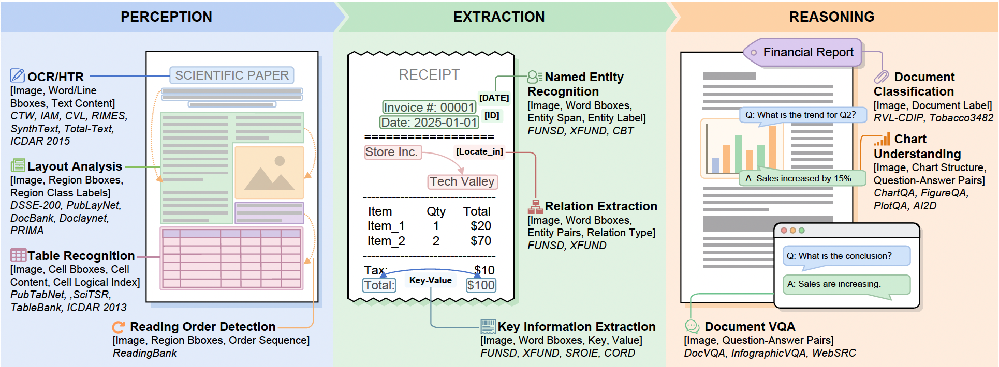
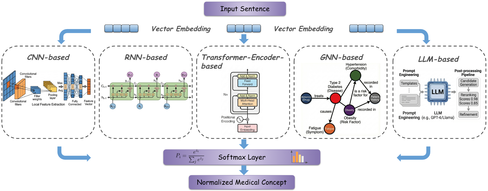
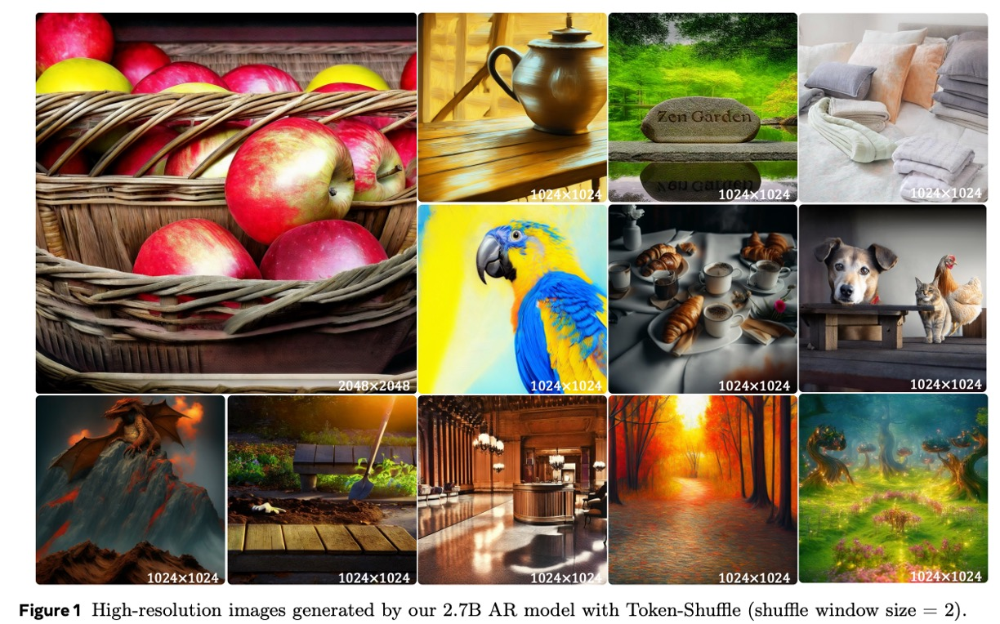
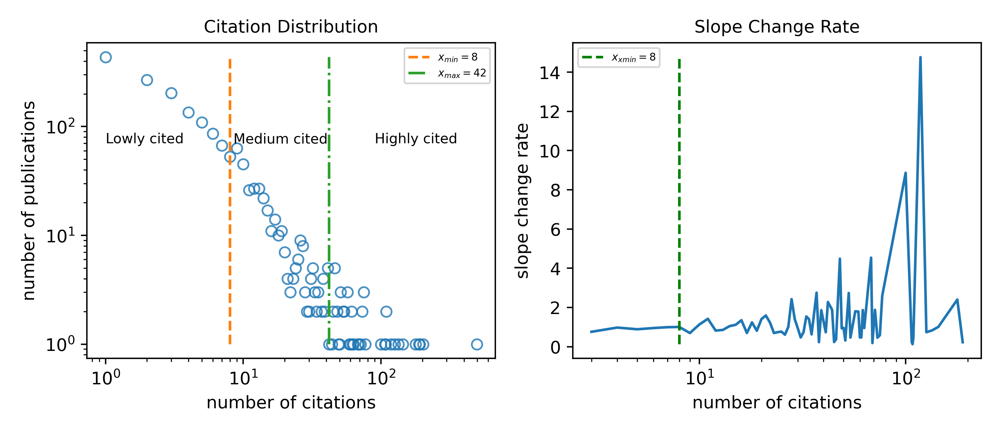
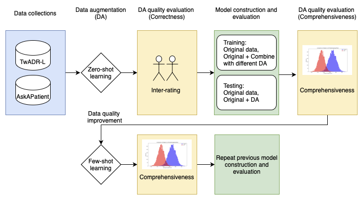
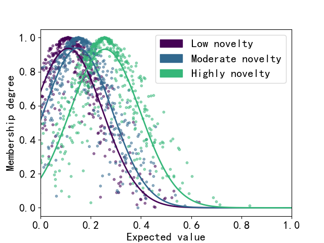
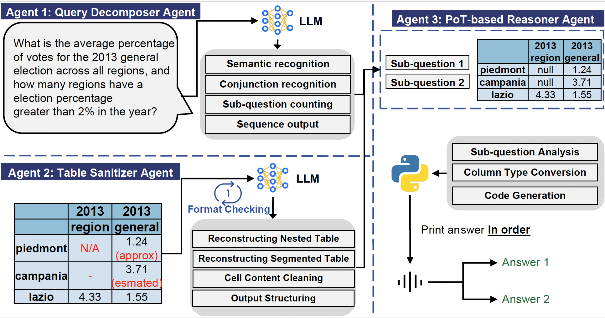

|
Haihua Chen (陈海华)
Email: haihua.chen[at]unt.edu Google Scholar Linkedin DBLP ResearchGate CV |
|
Haihua Chen is an Assistant Professor in the Anuradha and Vikas Sinha Department of Data Science and the Director of the Intelligent Data Engineering and Analytics Lab at the University of North Texas.
He is the current Chair of ASIS&T Special Interest Group – Scientific and Technical Information (SIG-STI). Dr. Chen’s research focuses on building high-performance and reliable artificial intelligence systems by applying natural language processing and machine learning in important domains, such as healthcare, legal, and science, with the mission of solving social problems in health, humanitarian aid, social justice, and sustainability.
He has coauthored more than 60 articles in prestige journals including Information Processing and Management, Knowledge-based systems, Journal of Biomedical Informatics, and others, and received nearly 1,000 citations in the last five years.
He is serving as co-editor for The Electronic Library, associated editor for Data Intelligence, PC chair for IEEE AITest 2025, organizing committee members for several international conferences, PC member for ACL, EMNLP, IEEE Big Data, and several top conference in NLP and AI.
My research interests including: Data Science, Health Informatics, Legal AI, Document Intelligence, Scientific Innovation, Generative AI, AI Applications. I am recruiting perspective Ph.D. students in Information, Data, Computer Science, and related domians (strong computational skills) will full financial support!. |
|
Research Philosophy: Research is the art of transforming curiosity into innovative knowledge that enriches human understanding and society. -- 2025
|
|
[Jan. 2026] One paper accepted by WWW 2026. [Dec. 2025] I will serve as the PC Co-Chair for IEEE AITest 2026. [Dec. 2025] I will attend the NSF CISE RE Workshop at FIU. [Nov. 2025] Paper “Unveiling the Merits and Defects of LLMs in Automatic Review Generation for Scientific Papers” received the Best Poster Award at IEEE ICDM'25. [Jul. 2025] Named as IEEE ICAIT 2025 Best Reviewer. |
Extenal Grants:
|  |
Dehao Ying, Fengchang Yu, Xu Ma, Changjiang Jiang, Yurong Li, Wei Lu arXiv 2026 [arXiv] |
|  |
Haihua Chen*, Yuhan Zhou, Ruochi Li, Aryan Murthy Illa, Ana Cleveland, Junhua Ding SSRN 2025 [SSRN] [GitHub] |

|
Xu Ma, Xiyang Dai, Jianwei Yang, Bin Xiao, Yinpeng Chen, Yun Fu, Lu Yuan ICLR 2024 [openreivew] [code] |

|
Xu Ma*, Yuqian Zhou*, Huan Wang, Can Qin, Bin Sun, Chang Liu, Yun Fu ICLR Oral 2023 [openreivew] [code] |
Internal Grants:
|  |
Xu Ma, Peize Sun, Haoyu Ma, Hao Tang, Chih-Yao Ma, Jialiang Wang, Kunpeng Li, Xiaoliang Dai, Yujun Shi, Xuan Ju, Yushi Hu, Artsiom Sanakoyeu, Felix Juefei-Xu, Ji Hou, Junjiao Tian, Tao Xu, Tingbo Hou, Yen-Cheng Liu, Zecheng He, Zijian He, Matt Feiszli, Peizhao Zhang, Peter Vajda, Sam Tsai, Yun Fu arXiv 2025 [arXiv] |

|
Xu Ma, Xiyang Dai, Yue Bai, Yizhou Wang, Yun Fu CVPR 2024 [arXiv] [code] |
|
|
Xu Ma, Xiyang Dai, Jianwei Yang, Bin Xiao, Yinpeng Chen, Yun Fu, Lu Yuan ICLR 2024 [openreivew] [code] |
|
|
Xu Ma*, Yuqian Zhou*, Huan Wang, Can Qin, Bin Sun, Chang Liu, Yun Fu ICLR Oral 2023 [openreivew] [code] |
Selected Publications [*Corresponding author] [Google Scholar]
Arxiv First:
Journal Articles:
|  |
Zhongyi Wang, Zereg Wang, Guangzhao Zhang, Jiangping Chen, Markus Luczak-Roesch, Haihua Chen* Expert Systems with Applications (JCR Q1) 2025 [pdf] [code] |

|
Zhongyi Wang, Na Wang, Haoxuan Zhang, Zeren Wang, Zhou Wang, Junhua Ding, Haihua Chen* Information Processing & Management (JCR Q1) 2025 [pdf] [code] |
|  |
Haihua Chen, Ruochi Li, Ana Cleveland, Junhua Ding Journal of Biomedical Informatics (JCR Q1) 2025 [pdf] [code] |

|
Fengjiao Tu, Linjing Wu, Kinshuk, Junhua Ding, Haihua Chen* Education and Information Technologies (JCR Q1) 2024 [pdf] |
|  |
Zhongyi Wang, Haoxuan Zhang, Jiangping Chen, Haihua Chen* Journal of Informatics (JCR Q1) 2024 [pdf] [code] |
Conference Papers:
|  |
Changjiang Jiang, Fengchang Yu, Haihua Chen, Wei Lu, Jin Zeng Findings of the Association for Computational Linguistics: EMNLP 2025 [pdf] |
|
|
Xu Ma, Xiyang Dai, Yue Bai, Yizhou Wang, Yun Fu CVPR 2024 [arXiv] [code] |
|
|
Xu Ma, Xiyang Dai, Jianwei Yang, Bin Xiao, Yinpeng Chen, Yun Fu, Lu Yuan ICLR 2024 [openreivew] [code] |
|
|
Xu Ma*, Yuqian Zhou*, Huan Wang, Can Qin, Bin Sun, Chang Liu, Yun Fu ICLR Oral 2023 [openreivew] [code] |
Teaching
Best paper of SEC 2019
Best student paper of ICME 2020
Outstanding Reviewer of NeurIPS 2022
Outstanding Reviewer of CVPR 2023
Academic Technology Scholar from Northeastern University 2022 Fall
Area Chair of Conferences:
ECCV 2026
Reviewer of Journals:
IEEE Transactions on Pattern Analysis and Machine Intelligence (TPAMI)IEEE Transactions on Image Processing (TIP)
IEEE Transactions on Multimedia (TMM)
IEEE Transactions on Circuits and Systems for Video Technology (TCSVT)
IEEE Signal Processing Letters (SPL)
IEEE Transactions on Intelligent Vehicles (TIV)
Reviewer of Conferences:
CVPR, ICCV, ECCV, ICML, ICLR, NeurIPS, SIGGRAPH Asia, KDD, AAAI, IJCAI, ACM MM, WACV, ICME, FG, ICASSP
Reviewer of Workshops:
Efficient Deep Learning for Computer Vision (ECV) @ CVPR Transformers for Vision (T4V) @ CVPR
AI and Social Good @ IJCAI
Analysis and Modeling of Faces and Gestures (AMFG) @ ICCV
Best paper of SEC 2019
Best student paper of ICME 2020
Outstanding Reviewer of NeurIPS 2022
Outstanding Reviewer of CVPR 2023
Academic Technology Scholar from Northeastern University 2022 Fall
- Shivam Duggal (MIT), 2023
- Yiming Xie (Northeastern University), 2023
- Xiaoyu Zhou (Peking University), 2023
- Junyi Zhang (Shanghai Jiao Tong University), 2023
- Hong-Xing "Koven" Yu (Stanford University), 2022-2023
- Mark Boss (University of Tübingen → Unity), 2021
- Hsin-Ping Huang (UC Merced), 2021-2023
- Kyle Sargent (Google AI Resident → PhD student at Stanford), 2021-2023
- Charles Herrmann (Cornell → Google), 2020-2021
- Gen Li (University of Edinburgh), 2020-2023
- Zudi Lin ( Harvard → Amazon ), 2020-2021
- Hwanjun Song (KAIST → NAVER AI Lab), 2020-2021
- Feitong Tan (SFU → Google), 2020
- Gengshan Yang (CMU → Meta), 2020-2021
- Rakesh Jasti (UC Merced), 2019
- Jialiang Wang (Harvard → Facebook), 2019-2020
- Taihong Xiao (UC Merced), 2019
- Xitong Yang (University of Maryland → Meta), 2019
- Wei-Sheng Lai (UC Merced → Google), 2018-2019
- Anurag Ranjan (Max Planck Institute for Intelligent Systems → Apple), 2018
- Wei-Chih Tu (National Taiwan University → Ganzin), 2017
- Jiangxin Dong ( DUST → Max Planck Institute for Informatics), 2017-2018
- Huaizu Jiang ( UMass Amherst → Northeastern), 2017-2019
- Zhaoyang Lv (Georgia Tech → Facebook), 2017, 2019
- Hang Su ( UMass Amherst → NVIDIA Research), 2017-2018
- Yi-Hsuan Tsai (UC Merced → NEC Lab → Phiar ), 2017
- Zhile Ren (Brown → Georgia Tech → Apple), 2016-2017
- Xiangyu Xu (Tsinghua/UC Merced → CMU/MIT → NTU), 2016-2017
- Jinshan Pan (DUST/UC Merced → NUST), 2015
I have been fortunate to work with many gifted students:
Area Chair of Conferences:
ECCV 2026
Reviewer of Journals:
IEEE Transactions on Pattern Analysis and Machine Intelligence (TPAMI)IEEE Transactions on Image Processing (TIP)
IEEE Transactions on Multimedia (TMM)
IEEE Transactions on Circuits and Systems for Video Technology (TCSVT)
IEEE Signal Processing Letters (SPL)
IEEE Transactions on Intelligent Vehicles (TIV)
Reviewer of Conferences:
CVPR, ICCV, ECCV, ICML, ICLR, NeurIPS, SIGGRAPH Asia, KDD, AAAI, IJCAI, ACM MM, WACV, ICME, FG, ICASSP
Reviewer of Workshops:
Efficient Deep Learning for Computer Vision (ECV) @ CVPR Transformers for Vision (T4V) @ CVPR
AI and Social Good @ IJCAI
Analysis and Modeling of Faces and Gestures (AMFG) @ ICCV
© 2025 Haihua Chen. Thanks to Xu Ma and Dr. Deqing Sun for the template. [Updated: Nov/2024]